Overview
This option generates a PIN that allows an external user to log into ProcessMaker and review the advances of a given case. The external user can check:
- Where the case is. (Completed tasks, Pending tasks/Not executed and Tasks in progress)
- A summary of the derivations and information related to the specific case.
Defining Case Tracker Information
Open the Process to be tracked by an external user. The related process map will appear, an interactive and friendly Business Process Design environment. Right-click on the design area and select Case Tracker, two options will be appear:
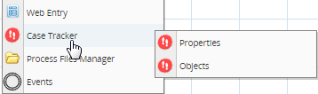
Case Tracker Properties
The external user can see either the whole ProcessMap or only pre-defined Stages. Likewise the external user can have access to the routing history or message history, or both. Please define what kind of information the external user should be able to view.

Where:
- Map Type: Type of ProcessMap which users will able to see when tracking a case. There are three possible options:
- None: Users can only track information about Case Form and Documents. In addition, if Derivation History and/or Message History are selected Case History and History Messages can be seen. They will not be able to see any information related to the Process design.
- ProcessMap It shows the process design with information about Pending/Not Executed tasks, Completed tasks, and Tasks in progress; moreover, users can track information about Where is the case, Case Form and Documents, Case History and History Messages these two lasts if Derivation History and/or Message History are selected.
- Stages Map: It is a sequence of events which will describe the path of a process.
- Routing History: It shows where the case is and the route history.
- Message History: It shows the messages sent during the execution of the process.
Defining a ProcessMap
By selecting this option the user will have the option to check where in the process is the task on execution, for instance where his process is and which status has been assigned to it.

If "Derivation History" and/or "Message History" are selected Case History and/or History Messages tabs will enable.
Each task will be differentiated by color which represents a state of a task. Next to the process a Key with the colors explanation is displayed:
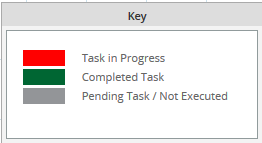
Defining Stages Map
A stage is any distinct time period in a sequence of events. In the case tracker a stage defines a sequential group of tasks. For instance, a user needs to know where his process is, but he is not interested in checking the entire process, so a stage map can be designed where he can check necessary information about the status of the process.
To define the stages please click on the Edit link in the Case Tracker Properties window:
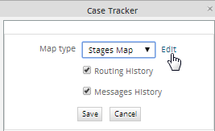
The Stage Map will appear.
By right clicking anywhere on the Stage Map you can add a new Stage. You can add as many stages as you need, but since this is a summary of the entire process it is recommended to design it as summarized as possible.

Each time a new stage is added, it will be connected to a previous stage:

Change the name of a stage by right clicking on it and selecting Edit option from the menu:
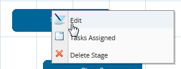
Use the same task's name or if the process is confidential use a similar one:
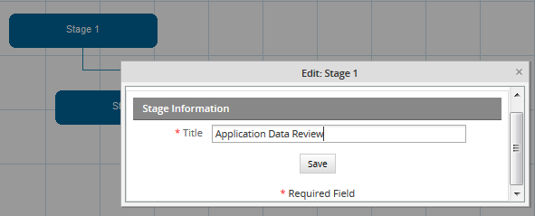
If you right click on the new stage and select Tasks Assigned you can define what tasks belong to this stage.
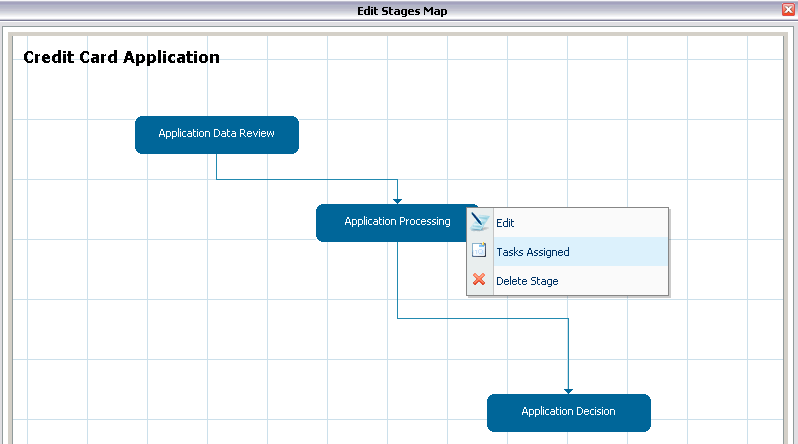
Click on Assign to get the list of tasks created in the process:
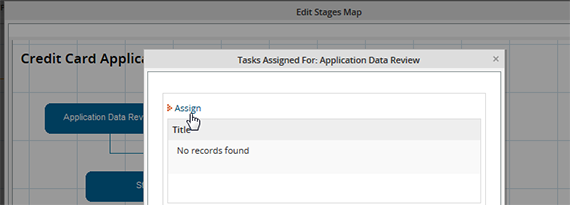
Click Assign to assign tasks to each stage:

Save the information and then send the user his respective case number and pin number. The user must introduce these information in the login page. When the user login to ProcessMaker to track his information, the process information will display as follows:
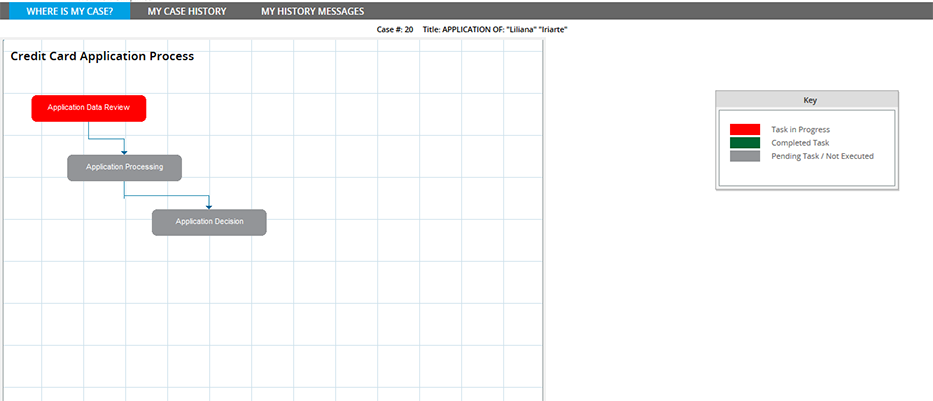
The above stage map shows where the case is and which tasks are still pending to be executed.
Note: My Case History and My History Messages tabs will be seen if the Routing History and Message History options are checked
Case Tracker Objects
It is also possible to define what process objects can be tracked by the external user. In other words, you can specify which dynaforms, input documents or output documents will be available for the external user through the case tracker. To add a new object in the list, please click on Assign and select the new object.
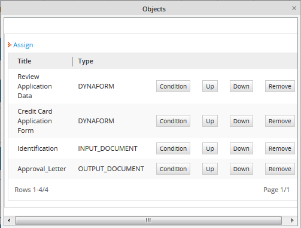
Save the information and then send the user his respective case number and pin number. The user must introduce these information in the login page. When the user login to ProcessMaker to track his information, he will see MY CASE FORMS AND DOCUMENTS tab, inside all defined objects will be listed:
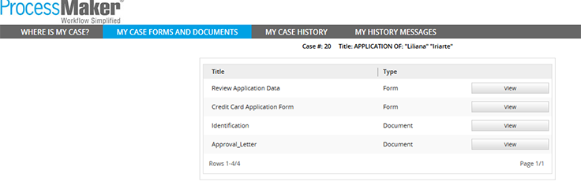
Tracking Case Information
To track the case, the external user needs the following information:
- Case Code: It corresponds to the case number, it can be obtained as follows:
@@CaseNumber = @@Data[1]['APP_NUMBER'];
Where: The variable @@APPLICATION contains the application "UID"
- PIN: Available in the System Variable @#PIN
This information can be sent to the external user by a notification, for example.
With this information the external user should load the following link.
http://<IP-ADDRESS>/sys<WORKSPACE>/<LANG>/<SKIN>/tracker/login
For example, if running ProcessMaker at the IP address 192.168.1.100 and using the default "workflow" workspace, the English language and the default "neoclassic" skin, then:
Then, the following login page will display where Case Number and Pin Number provided before must be introduced:

Where is my case?
By entering the required information (PIN and Case Number) the user will get access to the defined case tracker information. If ProcessMap option was previously defined inside the Case Tracker Properties, users will have access to the design of the process where they can check the status of their cases:
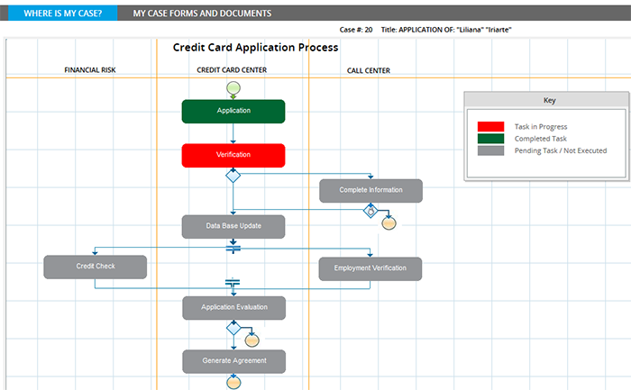
My Case Forms and Documents View
Defining the objects and entering the required information (PIN and Case Number), users will be able to see Forms and Documents filled during the case execution:
By clicking on view, a view mode of the form can be seen:

Moreover, if input documents were added as objects, the list of uploaded documents can be seen:
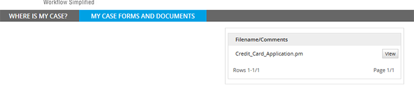
Click on View to have a brief description of the document which includes the option to download the document:
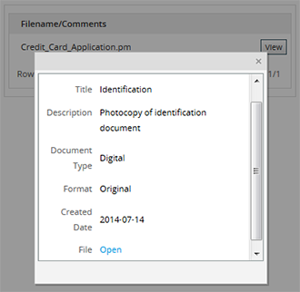
In the case of an Output Document, users not only have the option to see a brief description of it but also to download it:
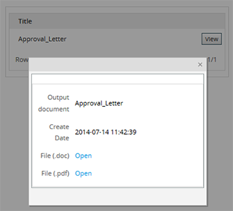
My Case History View
By selecting Derivation History and entering the required information (PIN and Case Number), users will able to see each process derivation, letting them know if their case has moved forward to next step.

My History Message View
By selecting Message History and entering the required information (PIN and Case Number), users will able to see any notifications sent during the execution of a process. Those notifications can be either task notifications or trigger messages:
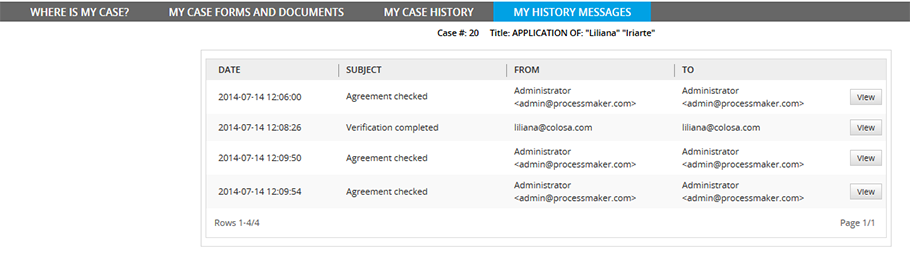
Click on View to see a detailed description of the notification:
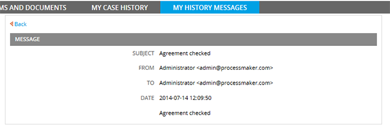